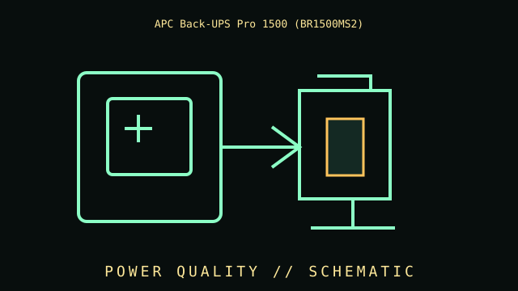

[ LINE-INTERACTIVE UPS // IDENTIFIED MODEL ]
APC Back-UPS Pro 1500 BR1500MS2
Line-interactive, 1500 VA / 900 W, 120 V; ten NEMA 5-15R outlets (six battery + surge, four surge-only); pure sine-wave output; user-replaceable battery. This record covers the specific labeled model and regional configuration, not every item in the product family.

ARCHIVAL IDENTIFICATION: Preserve the complete SKU, suffix, region, date code, manual revision, battery part (if applicable) and observed condition. Similar names do not prove equivalent hardware.
Model specifications & service record
| Subcategory | Line-interactive UPS |
|---|---|
| Topology / function | Line-interactive UPS with AVR; it transfers to battery inverter output when input conditions exceed its operating range. |
| VA/W ratings and outlets | 1500 VA / 900 W; 120 V; ten NEMA 5-15R outlets (6 battery + surge, 4 surge-only). |
| Battery / replacement | Sealed lead-acid, user-replaceable battery; use only the model-listed replacement cartridge and disconnect safely as the manual directs. |
| Runtime and conditions | Runtime is load-dependent; use APC’s BR1500MS2-specific runtime estimates for the real watt load. Estimates vary by battery age/condition, temperature and charge and are not guaranteed hold-up time. |
| Interfaces / monitoring | LCD status/control, USB communications and USB-A/USB-C charging ports; charging ports are not the same as host shutdown communications. RJ45 data-line protection is not network monitoring. |
| Safety and limitations | 120 V model with 900 W limit. Battery backup applies to six of ten receptacles. Follow the manual’s load, grounding, battery and disposal warnings; do not overload USB charging ports. |
| Revision / exact identification | BR1500MS2 is distinct from BR1500MS, BR1500G and BX1500M. The MS2 product page/manual governs this suffix and outlet layout. |
Archival and service notes
- Record the nameplate and battery label before service; keep measured behavior separate from manufacturer ratings and note load, input, temperature and test date.
- Do not open energized mains equipment. Batteries can deliver high fault current and may contain hazardous materials; follow manufacturer handling, replacement and recycling instructions.
- For preserved units, record physical damage, alarms, missing parts, battery age/swelling/leakage and substituted components. Do not energize damaged equipment.
Manufacturer sources
- Manufacturer product specifications — APC Back-UPS Pro 1500 BR1500MS2Primary source for the named SKU’s regional specifications and available product documentation.
- Manufacturer manual / support referenceConsult the revision matching the complete label code. Runtime estimates are manufacturer estimates at stated loads and operating conditions, not a guaranteed duration for aged batteries.